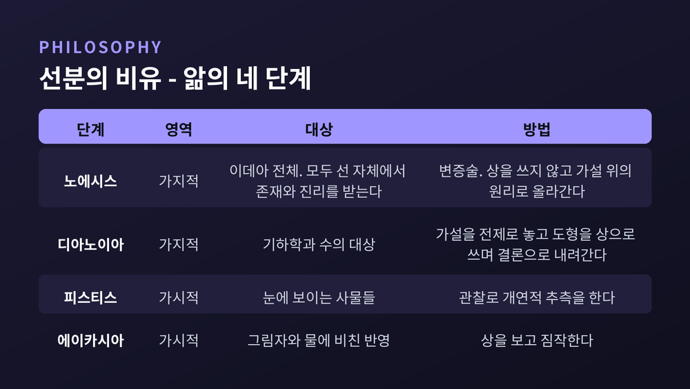
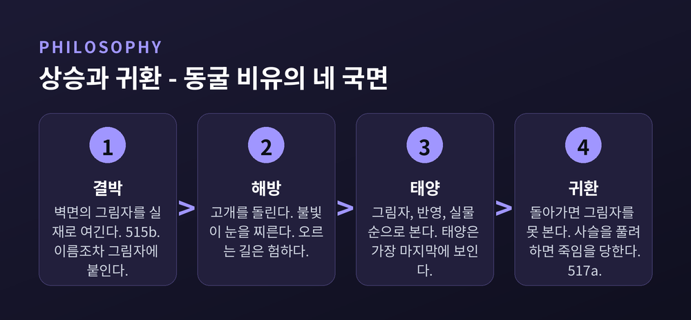

이번 글에서는 플라톤 이데아론의 뼈대를 『국가』 원문 위치를 짚어가며 정리해 보겠습니다. 동굴의 비유 하나만 떼어 읽으면 절반밖에 보이지 않습니다. 태양·선분·동굴 세 비유가 어떻게 맞물리는지, 그리고 이 구도가 왜 곧바로 반박당했는지까지 함께 보겠습니다.
플라톤은 『국가』 6권 끝에서 7권 초입까지 비유를 세 번 씁니다.
태양의 비유는 508b~509c에 있습니다. 선분의 비유는 509d~511e, 동굴의 비유는 7권 514a~520a입니다. 대화 상대는 플라톤의 형 글라우콘이고, 말하는 사람은 소크라테스입니다.
순서가 중요합니다. 선분의 비유는 글라우콘이 더 설명해 달라고 청해서 나온 것이고, 동굴의 비유는 그 둘을 이야기로 옮긴 것입니다.
페르세우스 판본에 붙은 폴 쇼리의 주석이 이 관계를 정확히 짚습니다. 동굴의 상은 감각의 세계와 사유의 세계의 대비를 "또 다른 비례로" 예시한다는 것입니다. 앞의 두 비유에서 플라톤은 일상 경험의 평면 위로 올라갔습니다. 동굴에서는 반대로 아래로 내려가, 태양 자리에 불을 놓고 실물 자리에 그림자를 놓습니다.
같은 비례식을 세 번 다르게 쓴 셈입니다.
유비는 단순합니다. 태양이 눈과 보이는 것들에 대해 갖는 관계를, 선(善)의 이데아가 지성과 사유되는 것들에 대해 갖는다는 것입니다.
태양은 두 가지를 줍니다. 보일 수 있는 힘, 그리고 생성과 성장과 자양분입니다. 그러나 태양 자신은 생성이 아닙니다. 마찬가지로 인식의 대상들은 존재를 선에 빚지지만, 선 자체는 존재가 아닙니다.
여기서 서양 형이상학에서 가장 많이 인용된 문장 하나가 나옵니다. 509b8~10의 '에페케이나 테스 우시아스', 곧 "존재를 넘어서"입니다. 존재를 질서 짓고 알 수 있게 만드는 것이 정작 존재 바깥에 있다는 선언입니다.
다만 이 구절의 해석은 아직 닫히지 않았습니다. 라파엘 페르버와 그레고어 담셴은 이를 "존재 바깥"이 아니라 더 우월한 종류의 존재로 읽어야 한다고 봅니다. 바로 뒤에 붙는 "지위와 힘에서 능가한다"는 표현이 관계적 위계를 가리킨다는 이유에서입니다.
어느 쪽이든 결론은 같습니다. 선의 이데아는 존재자들 가운데 가장 높은 항목이 아니라, 그 영역 전체를 성립시키는 제1원리라는 것입니다.
소크라테스는 선분 하나를 길이가 다른 두 토막으로 자르고, 각 토막을 다시 같은 비율로 자르라고 말합니다. 아래 둘은 가시적인 것, 위의 둘은 가지적인 것입니다.
네 구간에는 각각 영혼의 상태가 배정됩니다. 가장 아래가 에이카시아(짐작)입니다. 대상은 그림자와 물에 비친 반영입니다. 그 위가 피스티스(확신)로, 눈에 보이는 사물들을 다룹니다. 이 둘을 합친 것이 독사, 곧 의견입니다.
경계를 넘으면 디아노이아(추론적 사고)입니다. 기하학과 수의 대상을 다룹니다. 특징이 분명합니다. 가설을 전제로 놓고, 그려진 도형을 보조 이미지로 쓰면서 결론을 향해 내려갑니다.
맨 위가 노에시스(지성적 인식)입니다. 변증술의 힘으로 가설을 발판 삼아 가설 위의 원리로 올라갑니다. 이때는 어떤 상도 쓰지 않습니다.
재미있는 사실 하나를 덧붙이겠습니다. 이 비율대로 선분을 나누면 두 번째 구간과 세 번째 구간의 길이가 반드시 같아집니다. 눈에 보이는 사물의 자리와 수학의 자리가 같은 크기로 떨어지는 것입니다.

장면은 널리 알려져 있습니다. 어릴 때부터 다리와 목이 묶인 사람들이 있습니다. 고개를 돌릴 수 없어 앞의 벽만 봅니다. 등 뒤에 불이 타고, 불과 죄수 사이에 낮은 담이 있습니다. 그 담 위로 인형을 든 사람들이 지나갑니다.
죄수들이 보는 것은 인형이 아니라 인형의 그림자입니다. 들리는 것은 메아리인데, 그들은 그 소리를 그림자가 낸다고 여깁니다.
정작 결정적인 대목은 515b입니다. 소크라테스는 이렇게 묻습니다. 그들이 서로 대화할 수 있다면, 자기들이 쓰는 이름이 눈앞을 지나가는 것들에 붙는다고 여기지 않겠느냐고.
워싱턴대의 마크 코헨은 이 한 줄을 이데아론의 급소로 읽습니다. 죄수가 "저건 책이야"라고 말할 때, 그는 자기가 책을 가리킨다고 믿습니다. 실제로는 그림자를 가리키고 있습니다. '책'이라는 말의 진짜 지시 대상은 그가 볼 수 없는 곳에 있습니다.
여기서 플라톤의 주장이 드러납니다. 우리 언어의 일반 명사는 눈에 보이는 물건의 이름이 아니라는 것입니다. 그것은 오직 정신으로만 붙잡히는 것의 이름입니다.
그러니 동굴의 비유는 "감각을 믿지 말라"는 경고가 아닙니다. 우리가 매일 쓰는 말이 이미 이데아에 기대고 있다는 진단에 가깝습니다.
한 사람이 풀려나 밖으로 나갑니다. 오르는 길은 험합니다. 불빛이 눈을 찌르고, 동굴 입구의 빛은 더 아픕니다.
밖에서도 순서가 있습니다. 처음에는 그림자, 다음에는 물에 비친 것, 그다음에 나무와 바위 같은 실물입니다. 태양은 가장 마지막에 보입니다. 가장 밝기 때문입니다.
여기까지가 상승입니다. 그런데 플라톤은 이야기를 여기서 끝내지 않습니다.
그는 남은 이들이 딱해서 동굴로 돌아갑니다. 결과는 참담합니다. 어둠에 적응하지 못한 그의 눈은 예전보다 그림자를 못 봅니다. 죄수들의 눈에 그는 밖에 나갔다가 눈만 버리고 온 바보입니다. 그가 사슬을 풀어 주려 하면, 그들은 그를 죽일 것이라고 소크라테스는 말합니다.
플라톤이 누구를 떠올리며 이 문장을 썼는지는 짐작하기 어렵지 않습니다. 기원전 399년, 아테네는 "젊은이를 타락시켰다"는 평결 뒤 소크라테스에게 독당근을 마시게 했습니다. 그때 아테네는 민주정이었습니다.
다만 귀환이 손해만은 아닙니다. 520c에서 소크라테스는 덧붙입니다. 어둠에 다시 익숙해지고 나면, 그는 각각의 허상이 무엇의 모상인지 누구보다 잘 알게 된다는 것입니다. 아름다운 것과 정의로운 것의 실재를 이미 보았기 때문입니다.

이데아론의 골격은 두 축입니다.
하나는 분유입니다. 개별 사물은 이데아를 나누어 가짐으로써 그런 것이 됩니다. 말들은 실재합니다. 그러나 '말의 이데아'가 어떤 개별 말보다 더 실재적입니다. 모든 말이 거기서 존재를 빌려오기 때문입니다.
『국가』 596a에 이 원리가 짧게 정식화되어 있습니다. F한 것들이 여럿 있으면, 그것들이 F인 이유가 되는 하나의 이데아 F가 있다는 것입니다. 이른바 일자-다자 원리입니다.
다른 하나는 상기설입니다. 배움은 새로 얻는 것이 아니라 되찾는 것이라는 주장입니다. 영혼은 태어나기 전에 같음·아름다움·정의 같은 이데아를 보았고, 몸을 얻으면서 잊었다는 것입니다.
이 주장은 『메논』에서 탐구의 역설에 대한 답으로 처음 나옵니다. 이미 아는 것은 찾을 필요가 없고 전혀 모르는 것은 찾을 방법이 없다는 난제 말입니다. 이후 『파이돈』 72e 이후와 『파이드로스』 246a 이하에서 영혼 불멸론과 묶여 확장됩니다.
두 대화편의 결이 다르다는 점은 짚어 둘 만합니다. 『메논』의 상기는 정사각형을 두 배로 만드는 문제처럼 특정 명제를 되살리는 일입니다. 『파이돈』의 상기는 같음이나 아름다움 같은 기본 개념 자체를 되살리는 일입니다.
이데아론의 최대 난점을 처음 정리한 사람은 비판자가 아니라 플라톤이었습니다. 『파르메니데스』 130a~134e가 그 목록입니다.
순서대로 이렇습니다. 이데아의 범위 문제(130a~e), 전체-부분 딜레마(130e~131e), 제3인간 논변(132a~b), 이데아는 사유인가(132b~c), 닮음의 무한퇴행(132c~133a), 그리고 최대의 난점(133a~134e)입니다.
첫 번째부터 아픕니다. 젊은 소크라테스는 정의와 아름다움의 이데아는 확신합니다. 인간이나 불의 이데아 앞에서는 주저합니다. 머리카락·진흙·먼지의 이데아에 이르면 아예 회의합니다. 그것들은 "우리가 보는 바로 그것"이어서 이데아를 두기가 너무 터무니없다는 것입니다.
가장 유명한 것은 셋째, 제3인간 논변입니다. 이름은 플라톤이 아니라 아리스토텔레스가 붙였습니다.
1954년 그레고리 블라스토스의 논문이 이 짧은 대목을 현대 논쟁의 중심으로 끌어올렸습니다. 그는 세 전제를 뽑아냈습니다. 일자-다자, 자기술어화(F의 이데아는 그 자신이 F다), 비동일성(어떤 이데아도 그것에 분유하는 것과 동일하지 않다)입니다.
퇴행은 이렇게 굴러갑니다. A, B, C가 크다면 이들이 분유하는 '큼1'이 있습니다. 자기술어화에 따라 '큼1'도 큽니다. 그러면 큰 것이 넷이 되고, 다시 일자-다자에 따라 '큼2'가 필요합니다. 비동일성에 따라 '큼2'는 '큼1'과 다릅니다. 이 과정은 끝나지 않습니다.
이데아는 유일해야 합니다. 무한히 늘어난다면 이론이 무너집니다.
아리스토텔레스는 『형이상학』 A권 9장에서 이데아론을 정면으로 겨눕니다. 별도 저작 『이데아론에 관하여』도 썼지만 지금은 소실되어, 아프로디시아스의 알렉산드로스가 인용한 단편으로만 남아 있습니다.
그의 진단은 한 단어로 압축됩니다. 코리스모스, 곧 분리입니다.
991b의 문장이 직설적입니다. 실체와 그 실체가 속하는 사물이 떨어져 존재한다는 것은 불가능해 보이는데, 이데아가 사물들의 실체라면서 어떻게 사물과 분리되어 있을 수 있느냐는 것입니다.
스승은 세계를 설명하려고 또 하나의 세계를 만들었습니다. 제자가 보기에 그것은 설명해야 할 것을 두 배로 늘린 일이었습니다.
물론 아리스토텔레스의 독해가 공정했는지는 지금도 논쟁거리입니다. 그가 비판한 '분리'가 플라톤이 실제로 주장한 분리와 같은 것인지부터 확정되지 않았습니다.
이데아론은 반박당한 뒤에도 사라지지 않았습니다. 오히려 형태를 바꿔 가며 이어졌습니다.
플로티노스는 이데아들을 하위 실재의 원형이자 원인으로 재배치해 신플라톤주의를 열었습니다. 아우구스티누스 이후 기독교 철학자들은 이데아를 신의 정신 안의 관념과 동일시했습니다. 수학적 대상이 영원하고 불변한다고 보는 수학적 플라톤주의도 같은 계보에 있습니다. 프레게의 수학 실재론, 러셀과 암스트롱의 보편자 실재론, 루이스의 양상 실재론이 각기 다른 방식으로 그 후예입니다.
화이트헤드의 평가가 이 사정을 요약합니다. 유럽 철학 전통에 대한 가장 안전한 규정은 그것이 플라톤에 대한 일련의 각주라는 것입니다.
반대 방향의 계승도 있습니다. 니체는 『선악의 저편』 서문에서 기독교를 "민중을 위한 플라톤주의"라고 불렀습니다. 『우상의 황혼』에서는 "참된 세계가 마침내 우화가 된 이야기"라는 제목 아래 오류의 역사를 여섯 단계로 정리합니다. 플라톤에서 지혜로 닿을 수 있던 참된 세계가, 기독교에서는 죽음 뒤로, 칸트에서는 인식 너머로 밀려나고, 끝내 쓸모없는 관념으로 폐기되는 과정입니다.
부정조차 플라톤의 좌표 위에서 이루어진 셈입니다.
정리하면 이렇습니다.
동굴의 비유는 감각을 불신하라는 훈계가 아닙니다. 우리가 무엇을 보고 있는지 물을 때, 이미 보이지 않는 것에 기대고 있다는 사실을 드러내는 장치입니다.
이 구도에는 분명한 한계가 있습니다. 분리의 난점은 끝내 해결되지 않았고, 그 사실을 가장 먼저 적어 둔 사람이 플라톤 자신이었습니다.
그럼에도 이 비유가 2,400년을 버틴 이유는 답에 있지 않다고 생각합니다. 질문의 형태에 있습니다.
— 고개를 돌릴 수 있는가.
동굴을 나갈 수 있느냐고 물으신다면, 저는 그보다 앞선 질문이 있다고 답하겠습니다. 지금 내가 보는 것이 그림자일 수도 있다고 인정하는 일. 플라톤이 죄수에게 요구한 첫 동작도 그것이었습니다.